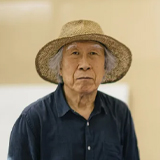

- ARTIST
-
Anglo-Japanese artist, Christian Hidaka (b.1977, Japan) is known for his own dreamlike figurative and landscape paintings with a unique mood created by the appearance of timeless characters and the saturated, bold colour texture of oil tempera. Fascinated by the history of pictorial space and the evolution of representational methods, his complex mental landscapes, in which his imagination and inner need for self expression are depicted as if they were scenes of a ceremony or an important event, are animated by an intimate associative logic through that disparate temporalities and spatial structures collide in the search for new pictorial forms.
In his signature style, he combines cultural references drawn from his autobiographical experience of Oriental culture to the Western art, such as old Japanese landscapes, science fiction, psychedelic literature, surrealism, futurism and Renaissance painting. In particular, Hidaka's recent interest in perspective reveals that the current impasse in painting might be alleviated by a fusion of two cultural traditions merged together like a hybrid spatial structure combining the Chiaroscuro technique of the Western tradition with the oblique perspective of Asian art.
-
Rosa Loy has established an international reputation as the main axis of the ‘New Leipzig School(NLS)’, which is evaluated as the 21st century's first bona fide artistic phenomenon and recall the essence of traditional meaning of painting. Rosa releases her own unique painting style, mixing selectively the regional characteristics and historical background of Leipzig that had formally been East German area, tangible and intangible relics of the communist era and fantasy, the heritage of Socialist Realism, Freudianism and Feminism.
She has a particular interest in traditional conceptions of women, femininity. Women are depicted as the subject that helps female is another female being, the pursuit of beauty is self-satisfactory, and she is depicted as the principal agent of labor and active pioneer. Women who look like twins or reflective another self of each other imply Loy’s longing for the solidarity of women who support each other to build an ideal society in her works. Loy uses paint containing casein, the main protein component of milk, instead of oil or acrylic paint. She attains her magical style of painting by producing and proficiently applying her own pure colors without additives.
-
Song Burnsoo is a leading figure of Korean modernism and avant-garde featuring his own practice by encompassing a wide range of art. He has been dedicating himself over a half century to figure the unique identity of Korean contemporary art. His practice has expanded to the religious reflection on human existence through lifelong investigation, and shows outstanding achievements not only in the contemporary art but also in the realm of religious art. He was a professor of College of Fine Arts at Hongik University from 1980 to 2008 and a director of Daejeon Museum of Art.
At his early phases until 1970s, he encountered the social injustice and raised a voice of criticism by working on intense and provocative prints by borrowing pop art elements. Starting to describe roses with distinctive sharp thorns in prints, the thorn becomes the persona of Song as he deeply engaged in a spiritual reflection through the ups and downs of life. The assemblage of thorn-shaped reliefs generates a keen sense of tension as though they penetrated the actual surface of the canvas and encourages the audience to appreciate multi-layered psychological states such as pain and sacrifice or despair and hope with a more tangible approach.
-
Hoh Woo Jung represents his own pure abstraction by consistently exploring infinite possibilities and moderate variations found in the most fundamental combination of lines and faces. He collects images of various objects that emerge with interest in events and thoughts in modern society and expresses the meaning and the hidden side of them in the form of paintings. He completed National Post-graduated and Graduated Degrees (Diplôme national supérieur d'arts plastiques and Post-diplôme) at Ecole Nationale Supérieure des Beaux‐Arts in Paris.
He reveals the hidden side of something through a relationship that could not be accurately defined, such as light and shadow, foreground and background, and individuals and the whole. In his work, various different objects and figures unite, eventually arriving at a state of balance. Such images combining elements of uncertainty, tension, balance and imbalance function as a mechanism through which the artist portrays a sense of anxiety, emptiness and desolateness one habitually confronts in contemporary society. The actual forms of objects have been removed in Hoh’s recent work in which the compositions are constructed solely with lines and curves.
-
Jinnie Seo has received B.A. in biology from New York University, and studied at Skowhegan School of Painting and Sculpture, Skowhegan before receiving M.F.A. from New York University, New York. Her site-specific projects cross borders between drawing / painting and sculpture / installation, and construct experiential spaces that are interwoven with personal memories and the commonality of human experiences. Aesthetics of the past and the present as well as the usage of disparate materials and methods are employed to heighten an understanding of time and space.
Her creative approach starts with the rhythmic interplay of hand gestures, which movement tells intimate stories unfurling from her memories. The course of her methodology includes carefully unwinding strands of emotions forming a series of visual lexicons and ultimately materializing them in the realm of reality. An emotion is a state of intuitive feeling derived from experiences stemming from one’s surrounding space or interrelationship with others. These salient points trigger the immersive spatial and temporal transformation of the exhibition space encapsulating her core idea of on-site installation works.
-
CHRISTIAN HIDAKA
UK, 1977
-
ROSA LOY
GERMANY, 1958
-

SONG BURNSOO
KOREA, 1943
-
HOH WOO JUNG
KOREA, 1987
-
JINNIE SEO
USA, 1963